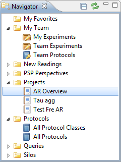

The Navigator is the starting point for finding and navigating data in Phaedra. It allows you to locate the objects you will be working with: Protocols, Experiments, Plates, Projects, etc. Double-clicking on any item listed in the Navigator will open a new view, showing the contents of the selected item.
The Navigator's contents are structured into different categories:
- My Favorites
- This group lists your favorite protocols, experiments, plates, queries or silos. You can add items to this group by selecting and dragging them onto the group.
- My Team
- My Experiments: A list of experiments that you have created.
- Team Experiments: A list of experiments that you or someone of your team has created.
- New Readings
- This lists the plates that have been prepared by the data capture server. It contains, per protocol, newly delivered plates that you can link with barcodes.

- PSP Perspectives
- My Perspectives: A collection of your own PSP Perspectives
- Public Perspectives: A collection of public PSP Perspectives, every user can use these perspectives.
- Team Perspectives: A collection of team PSP Perspectives, every team member can use these perspectives.
- Protocols
- Queries
- Example Queries: A public list of queries that serve as an example.
- My Queries: A list of queries that you have created and you have access to.
- Public Queries: A public list of queries.
- Silos
- Example Silos: A public list of silos that serve as an example.
- My Silos: A list of silos that you have created and only you have access to.
- Public Silos: A public list of silos.
If at any time you cannot find the Navigator (e.g. it has been minimized, closed, or moved outside of the screen), you can restore it by selecting Window > Show View > Other... > Navigator.